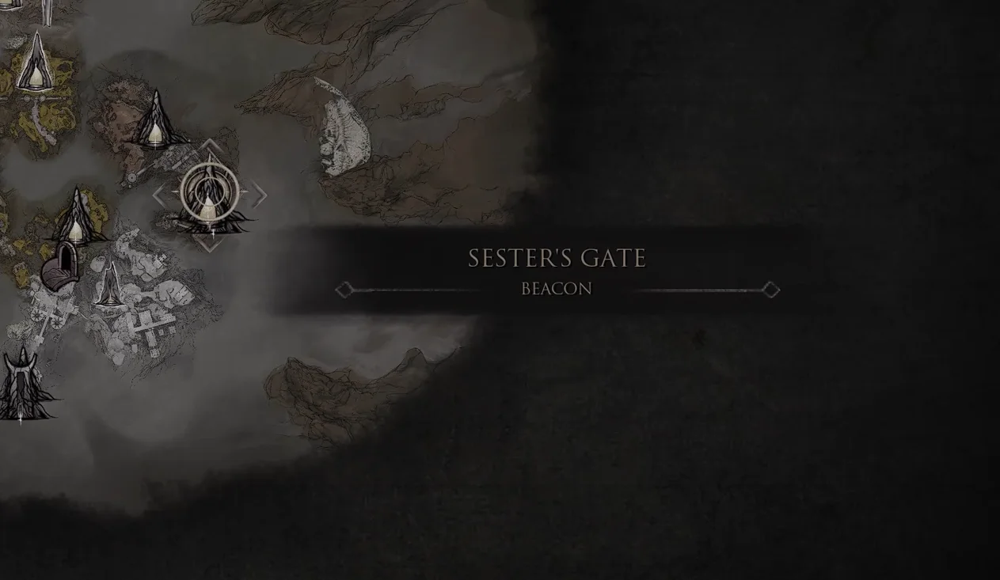
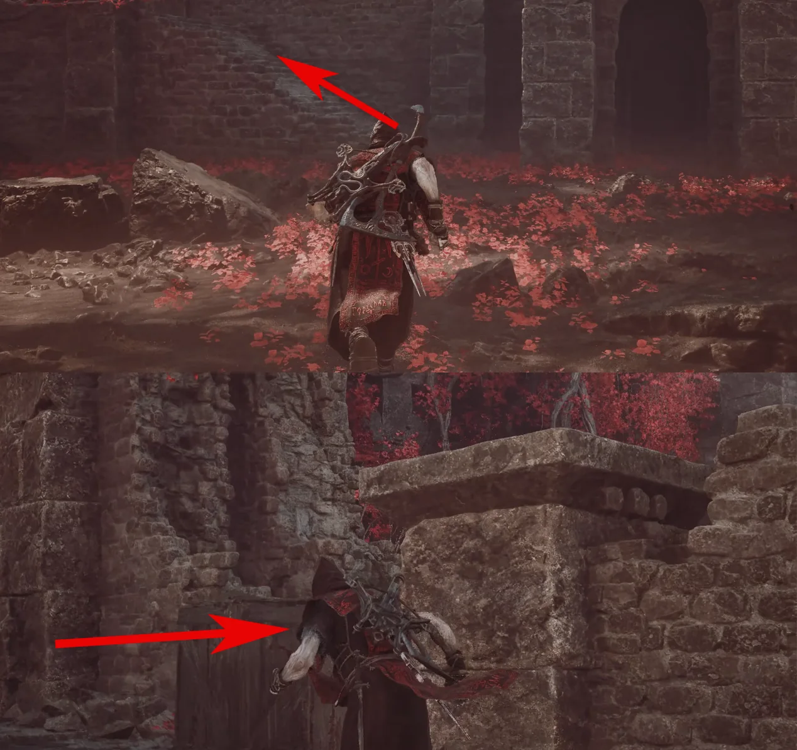
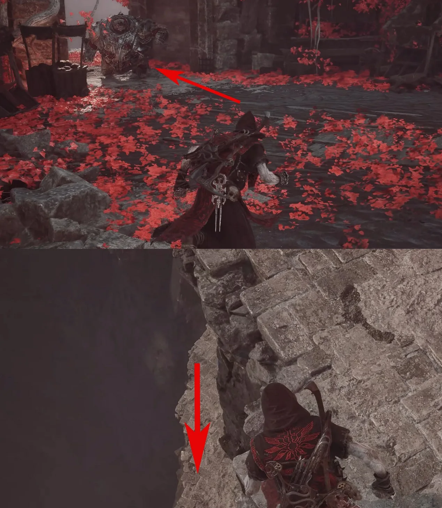
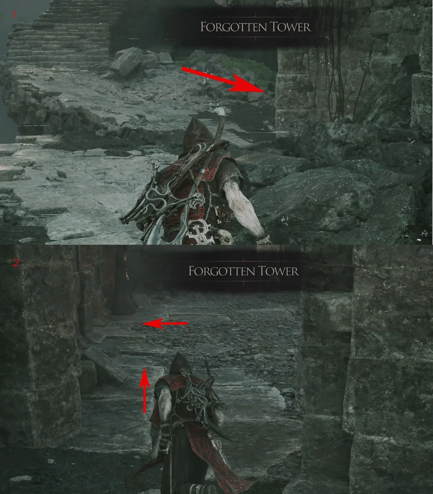
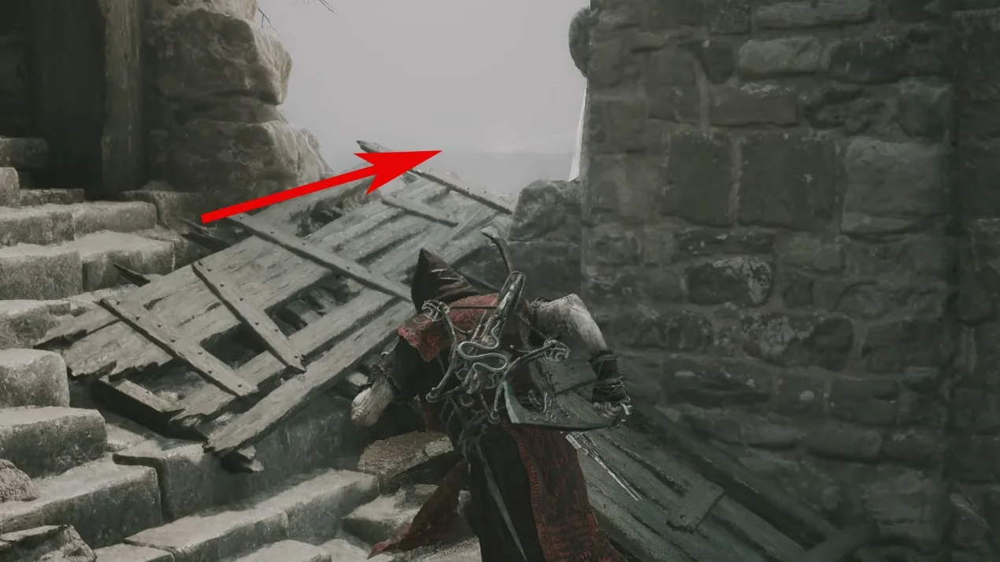
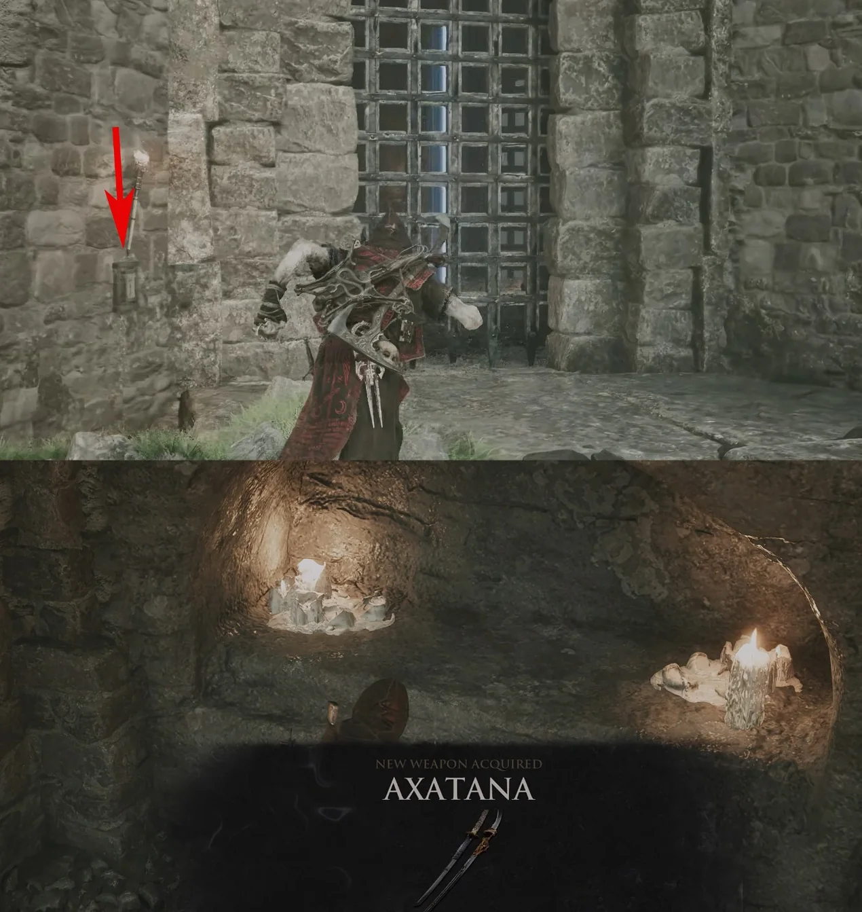

Primary weapon acquisition · Mammon
How to get
Axatana
Follow this captured route from Sester's Gate Beacon to obtain Axatana.
- Region
- Mammon
- Starting point
- Sester's Gate Beacon
- Base damage
- 25 / 35

Route 01Travel to Sester's Gate Beacon.
Route 02Head behind the Beacon, climb the marked stairs and turn right.
Route 03Turn left at the cliff, drop down, then use the jump device to reach Forgotten Tower.
Route 04After the jump, turn back and enter at the right-rear opening. Turn left and climb the stairs.
Route 05Leave by the right side of the stairs and use the next jump device.
Route 06At the gate, activate the switch to open it. Defeat the enemies in the room to collect Axatana.